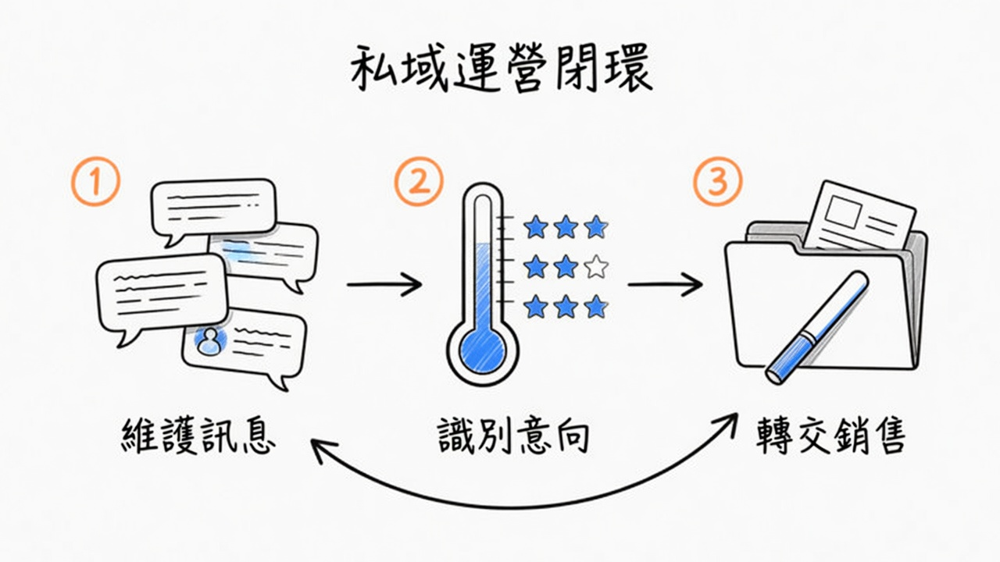

★ 高商機 · 新增
老袁 · AI 私域運營工具
自動維護個人微信與企業微信上的客戶訊息， 識別購買意向並轉交給銷售。 聽後筆記稱業務閉環已運作流暢——偏toB／代運營客單，不是玩具 demo。
★★★★★商機
SaaS／代運營變現
P0有銷售資源時
為什麼能賺錢
- 銷售最痛：跟進漏人、意向不清、交接斷層——願為「多成交／少人時」付錢。
- 閉環清楚：訊息 → 意向 → 銷售工單，可按席位或代運營月費報價。
- 與 OpenFDE 互補：FDE 做現場流程；私域做成交前漏斗。
企業化落地（建議）
- 優先企微／CRM 側：側邊欄、會後摘要寫字段、意向僅輔助。
- 成交與敏感動作必須人工確認；全鏈路日誌給內控。
- 避開個微全自動加好友／群發灰產——平台與合規可一刀歸零。
資料狀態
- 來源：WaytoAGI 未來矽世界聽後筆記（作者：老袁）。
- 公開官網／GitHub：筆記未附穩定連結 → 以架構與打法複用為主。